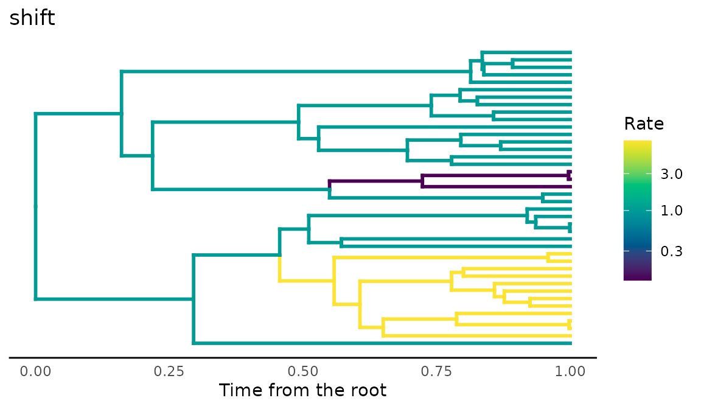
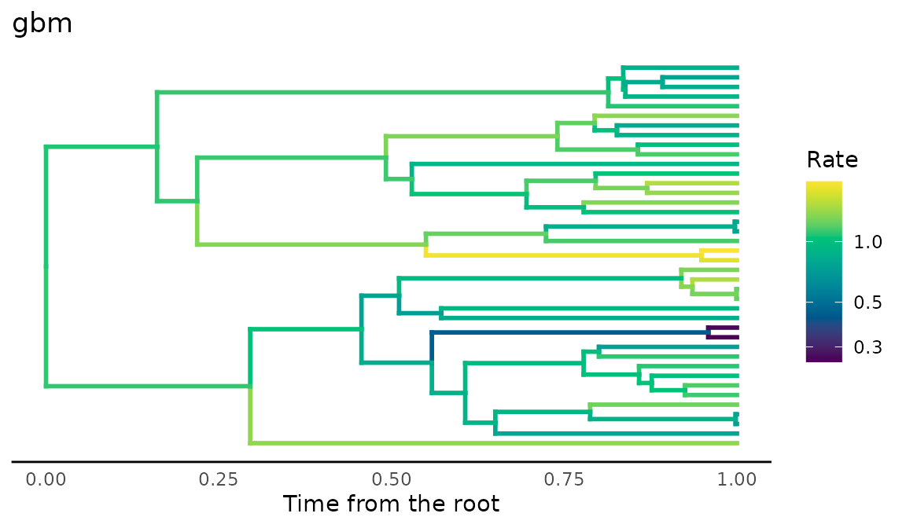
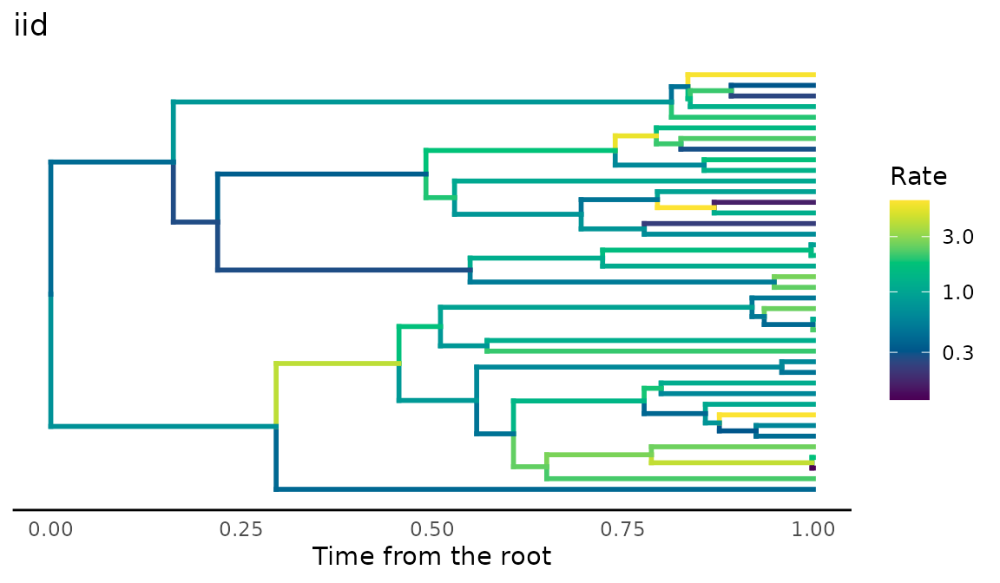
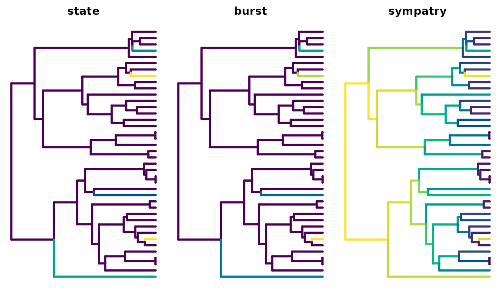
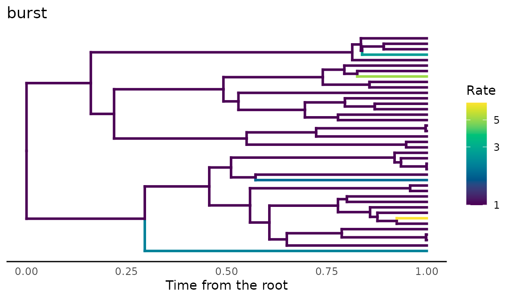
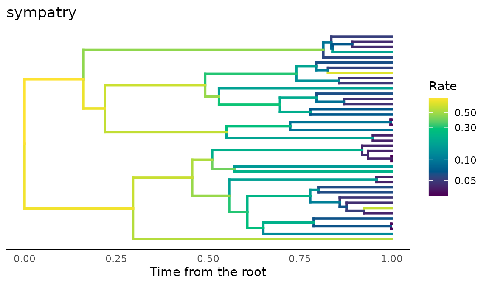
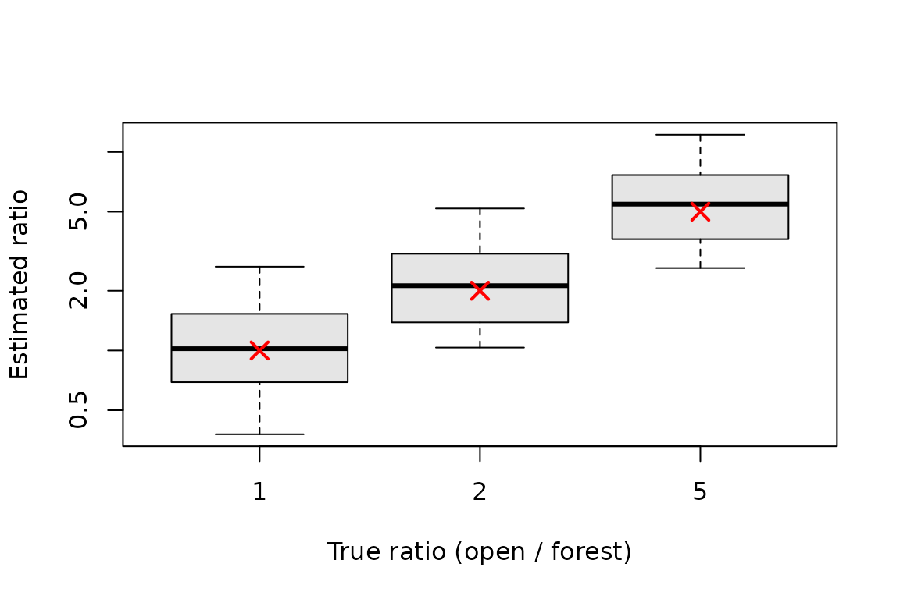

Rates of trait evolution that vary among branches
Source:vignettes/branch-rates.Rmd
branch-rates.RmdMethods that estimate a rate of trait evolution for each branch of a tree are increasingly used to ask where and why evolution sped up or slowed down. Whether they can answer such questions depends on how well they recover rates that are known, and that requires data simulated with known rates. This vignette shows the three ways comdynamite generates rates that vary among branches, and how well two estimators recover them:
- rates as a statistical model of their own, with
trait_rates(); - rates that follow the history of a discrete character along the
tree, such as habitat or region, with
trait_mk()andhistory_rates(); - rates that follow ecological dynamics, the turnover of partners in a
simulated metacommunity (
turnover_rates()) or the trophic level in a food web (food_web_rates()).
All of them give one rate per branch, which
trait_rates(edge_rates = ) turns into trait values at the
tips and nodes. The estimates in the last part were computed in advance
with data-raw/vignette_rates.R,
which needs RRphylo and mvMORPH; the rest runs here.
library(comdynamite)
set.seed(7)
tree <- treeshapesim::sim_tree_shape(40)plot_rates() colours each branch by its rate, on a
logarithmic scale, from slow (dark) to fast (light).
Rates as a model
trait_rates() draws the rate of each branch from one of
three models: discrete shifts that multiply the rate and pass to the
descendants ("shift"), a rate that drifts as geometric
Brownian motion along the tree ("gbm"), or rates drawn
independently for each branch ("iid"). The trait then
evolves by Brownian motion with that rate on each branch.
shift <- trait_rates(tree, "shift", shifts = 2, shift_size = c(8, 1 / 8))
gbm <- trait_rates(tree, "gbm", rate_sd = 0.8)
iid <- trait_rates(tree, "iid", rate_sd = 0.8)
plot_rates(shift, title = "shift")
plot_rates(gbm, title = "gbm")
plot_rates(iid, title = "iid")
Each result keeps the rates (edge_rate), the trait
values at the tips (tips) and nodes (nodes),
and the shifts, so the truth is available for any comparison.
Rates from a history along the tree
Ecological hypotheses about rates are often about the history of
lineages: evolution faster in one habitat than another, a burst after
colonising a new region, or a slowdown as lineages accumulate in the
same region. trait_mk() simulates the history of a discrete
character along the tree, and history_rates() turns it into
the rate of each branch, the mean over the branch of a rate that depends
on the history at each moment.
habitat <- trait_mk(tree, q = 0.5, states = c("forest", "open"))
state <- history_rates(habitat, "state", state_rates = c(forest = 1, open = 5))
burst <- history_rates(habitat, "burst", burst = 9, decay = 0.1)
sympatry <- history_rates(habitat, "sympatry", r = -0.1)
summary(cbind(state, burst, sympatry))
#> state burst sympatry
#> Min. :1.000 Min. :1.000 Min. :0.03020
#> 1st Qu.:1.000 1st Qu.:1.000 1st Qu.:0.04575
#> Median :1.000 Median :1.000 Median :0.09235
#> Mean :1.127 Mean :1.175 Mean :0.19150
#> 3rd Qu.:1.000 3rd Qu.:1.000 3rd Qu.:0.22900
#> Max. :4.621 Max. :6.911 Max. :0.81873With "state", each habitat has its own rate, as in
Brownian motion with several regimes (O’Meara et al. 2006). With
"burst", each change of habitat multiplies the rate, and
the excess decays with time, along the descending branches too,
following the expectation that selection is strongest when a lineage
first adapts to a new community (McPeek 2017). With
"sympatry", the rate falls as more lineages share the same
state, the diversity-dependent model with biogeography of Drury et
al. (2016); data-raw/validation_sympatry.R checks it
against RPANDA.
plot_rates(tree, state, title = "state")
plot_rates(tree, burst, title = "burst")
plot_rates(tree, sympatry, title = "sympatry")
x <- trait_rates(habitat, edge_rates = state)
head(x$tips)
#> t1 t2 t3 t4 t5 t6
#> -0.9494369 -0.3051386 -0.5780631 -0.6126907 0.4633037 0.9653968Rates from ecological dynamics
The metacommunity of simulate_metacommunity() runs in
ecological time among the species at the tips, so it cannot inform
internal branches. turnover_rates() uses it for the tip
branches: partner_turnover() counts how often other species
enter or leave the sites where each species lives, and over the last
window units of time of each tip branch the rate is
sigma2 * (1 + k * turnover). How much branch time the
ecological dynamics represent is a choice, set by window;
by default it is the whole tip branch.
sim <- simulate_metacommunity(landscape_implicit(20), species_traits(tree),
competition_matrix(tree, "none"), n_steps = 400,
record_steps = seq(200, 400, 10), extirpation = 0.02)
rates <- turnover_rates(sim, k = 100)
summary(attr(rates, "turnover"))
#> Min. 1st Qu. Median Mean 3rd Qu. Max.
#> 0.0000 0.0000 0.4494 0.3121 0.4746 0.6667
x <- trait_rates(tree, edge_rates = rates)food_web_rates() does the same with the food web of
food_web_dynamics(): each tip belongs to a trophic level,
and its tip branch evolves faster the faster the mean trait of its level
changed. These speeds are directional changes under selection, not
Brownian variances, so they set relative rates among levels, scaled by
k.
web <- food_web_dynamics(seq(0, 4000, by = 20), init = c(R = 50, N = 0.1, P = 0.1),
traits = c(R = 10, N = 4, P = 6), introductions = c(P = 2000),
dt = 0.5)
levels <- sample(c("R", "N", "P"), ape::Ntip(tree), replace = TRUE)
rates <- food_web_rates(web, tree, levels, k = 500)
attr(rates, "speed")
#> R N P
#> 0.001989566 0.002973562 0.000143305Recovering the rates
res <- readRDS("branch-rates.rds")RRphylo under the three models. RRphylo (Castiglione et al. 2018) estimates a rate per branch by phylogenetic ridge regression. Over 30 trees of 60 species per model, the mean Spearman correlations were:
aggregate(cbind(with_change, estimated, ceiling) ~ model, res$models,
function(v) round(mean(v), 2))
#> model with_change estimated ceiling
#> 1 gbm 0.36 0.08 0.29
#> 2 iid 0.37 0.06 0.35
#> 3 shift 0.35 0.08 0.24with_change is the correlation between the rate RRphylo
estimates and the change that actually happened on each branch, per unit
length; estimated, between its absolute value and the true
rate; and ceiling, between the true rate and the realised
change, scaled by the square root of the branch length. The ceiling is
the most any method can achieve from one realisation of the process per
branch, since a fast branch can still change little by chance, and it is
low. RRphylo follows the change that happened, but its rates say little
about the rate that generated it.
Regimes. When the history is known, the rate of each
state can be estimated by Brownian motion with several regimes (O’Meara
et al. 2006), here with mvMORPH::mvBM(model = "BMM")
(Clavel et al. 2015) on the true history, over 30 trees of 60 species
per true ratio:
aggregate(estimated ~ ratio, res$regimes, function(v) round(stats::median(v), 2))
#> ratio estimated
#> 1 1 1.02
#> 2 2 2.12
#> 3 5 5.46
boxplot(estimated ~ ratio, res$regimes, log = "y", xlab = "True ratio (open / forest)",
ylab = "Estimated ratio", col = "grey90")
points(1:3, c(1, 2, 5), pch = 4, col = "red", cex = 1.5, lwd = 2)
Pooling the branches of each regime gives much better estimates than rates per branch, and the medians are close to the true ratios (red crosses), with a wide spread among trees.
Turnover of partners. With rates from
turnover_rates(), the Spearman correlation between the
absolute rate RRphylo estimates on each tip branch and the turnover of
partners of the species, over 30 metacommunities on trees of 40
species:
round(summary(res$turnover$rho), 2)
#> Min. 1st Qu. Median Mean 3rd Qu. Max.
#> -0.27 0.06 0.10 0.13 0.24 0.56The correlation is weak and varies among metacommunities: the turnover changes the rates of tip branches only, and the same limit of one realisation per branch applies, so a signature of assembly in the rates of single branches is hard to detect even when it is there by construction.
Limits
- Each branch carries one realisation of the process, which caps how well any estimator can recover the rate of a single branch; pooling branches, as in models with regimes, helps.
- The ecological dynamics of
turnover_rates()andfood_web_rates()inform only the tip branches, and the match between ecological time and branch length (window) is a choice, not a result of the simulation. - The speeds of
food_web_rates()are directional changes of the mean trait, soksets relative rates, not an equivalence with Brownian variances.
References
Castiglione, S., Tesone, G., Piccolo, M., Melchionna, M., Mondanaro, A., Serio, C., Di Febbraro, M., & Raia, P. (2018). A new method for testing evolutionary rate variation and shifts in phenotypic evolution. Methods in Ecology and Evolution, 9, 974–983. https://doi.org/10.1111/2041-210X.12954
Clavel, J., Escarguel, G., & Merceron, G. (2015). mvMORPH: An R package for fitting multivariate evolutionary models to morphometric data. Methods in Ecology and Evolution, 6, 1311–1319. https://doi.org/10.1111/2041-210X.12420
Drury, J., Clavel, J., Manceau, M., & Morlon, H. (2016). Estimating the effect of competition on trait evolution using maximum likelihood inference. Systematic Biology, 65, 700–710. https://doi.org/10.1093/sysbio/syw020
McPeek, M. A. (2017). Evolutionary Community Ecology. Princeton University Press. https://doi.org/10.23943/princeton/9780691088778.001.0001
O’Meara, B. C., Ané, C., Sanderson, M. J., & Wainwright, P. C. (2006). Testing for different rates of continuous trait evolution using likelihood. Evolution, 60, 922–933. https://doi.org/10.1111/j.0014-3820.2006.tb01171.x